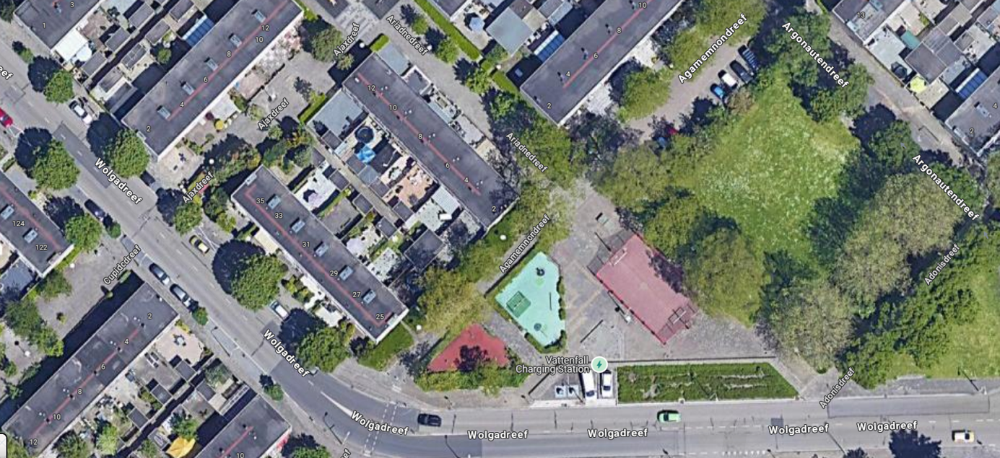
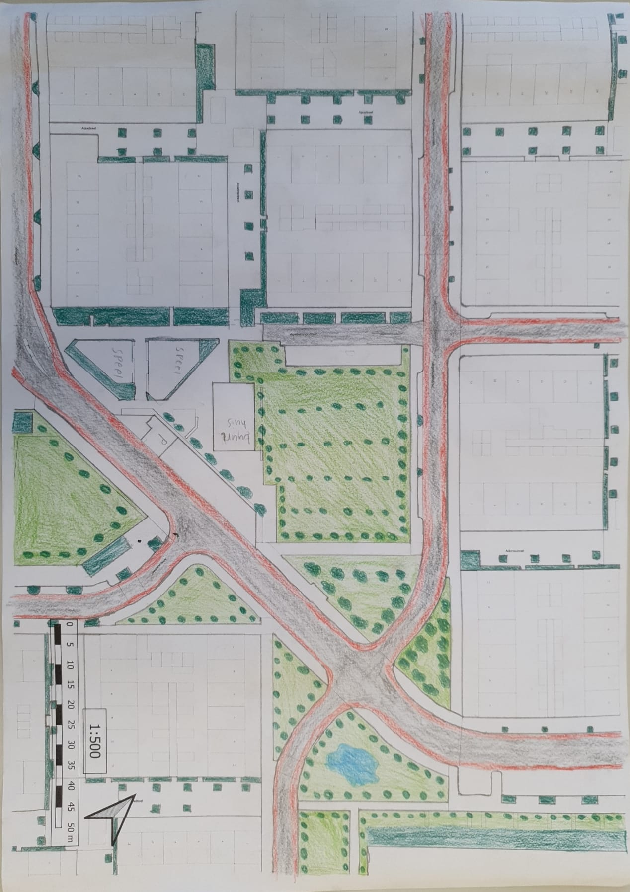
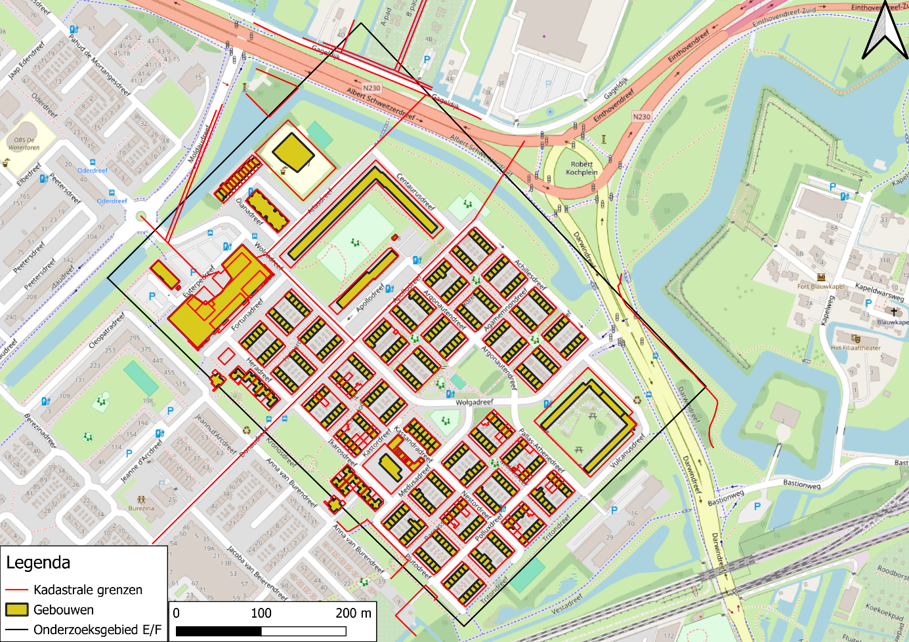
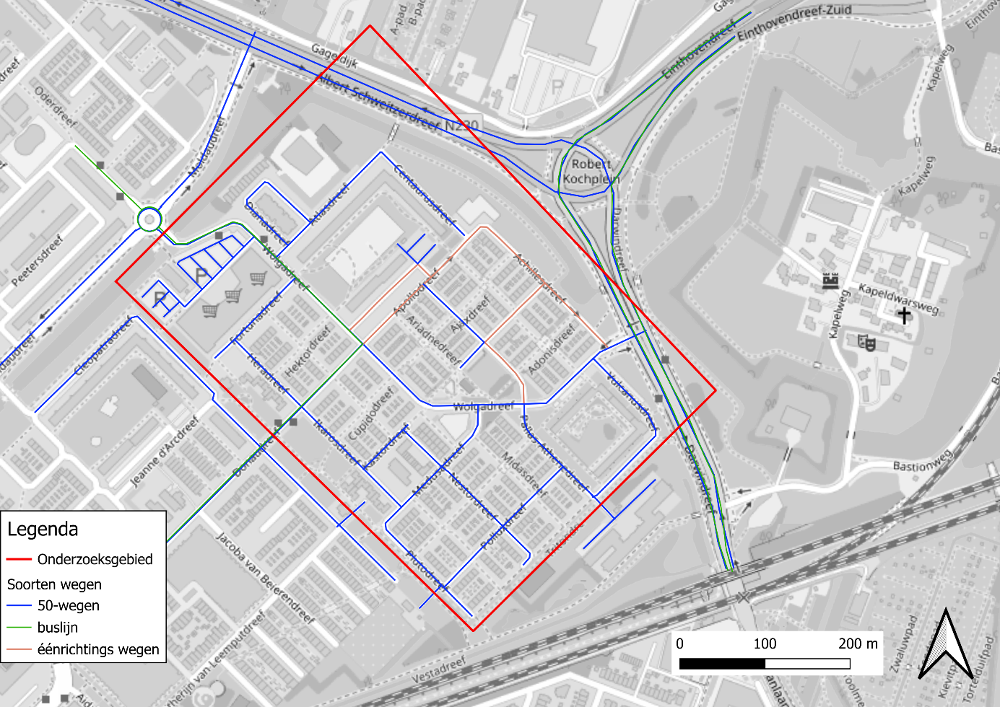

Overvecht — verduurzaming & herinrichting van een Utrechtse wijk
244.500 m²
plangebied Overvecht-E
50%+
meer groen in het ontwerp
9
zonnepanelen per woning
80 mm/u
waterberging bij extreme bui
Over dit project
In opdracht van woningcorporatie Woonin hebben we onderzoeksgebied E in Overvecht (Utrecht) integraal herontworpen. Het plangebied wordt begrensd door de Albert Schweitzerdreef, Moldaudreef, Darwindreef en Vestadreef — een typische stempelwijk uit de jaren '60 met veel potentie voor verbetering.
Het project bestond uit drie onderdelen: verduurzaming van de bestaande woningen, herinrichting van de openbare ruimte en het ontwerp van een buurtkamer voor jongeren. Alle drie moesten in samenhang worden uitgewerkt tot één integraal plan.
Tools gebruikt
QGIS
Tygron
Revit
Ubakus
MatrixFrame
PDOK
EP-Online
Mijn bijdrage aan het project
Ideeënschets plangebied — 30-zone, fietssuggestiestroken, fontein
Ideeënschets buurthuis — voetbalveld op het dak met zonnepanelen
Plattegrond inrichting plangebied (schaal 1:500)
Maatgevende doorsnedes overzichtskaart
Groenstructuur analyse in QGIS
3D-analyses in Tygron (voor/na vergelijking)
Tygron wateroverlast analyses (uur 0–4)
Tygron hittestress analyse (voor/na)
Revit model + plattegrond buurthuis
Aanzicht voorkant buurthuis
3D visualisatie — sleep de slider om huidig vs. ontwerp te vergelijken (Tygron)
Maatregelen openbare ruimte
- 🌳 50% meer groen — bomen langs straten, grasbetontegels, parkje met fontein centraal in het gebied
- 🚲 Fietssuggestiestroken op de Wolgadreef — veiligheid voor fietsers en overstekende kinderen
- 🚗 Wolgadreef wordt 30 km/u zone — rustiger en veiliger straatprofiel
- 💧 Wadi's langs de weg — waterberging voor 80mm/uur extreme neerslag
- ⛲ Fontein als ontmoetingspunt — met boomschors ondergrond rondom voor waterdoorlaatbaarheid
- 🏠 Buurtkamer voor jongeren — keuken, voetbaltafels, terras, moestuintje
Maatregelen woningrenovatie
- 🏠 Binnenisolatie gevel — spouw te dun, buitenaanzicht mag niet veranderen
- ☀️ 9 zonnepanelen per woning op het zuidgerichte dak
- 🌿 Groene daken als standaard op alle platte daken
- 💨 Decentrale WTW-ventilatie + gevelroosters (Renson Invisivent)
- 🔥 Hybride lucht-water warmtepomp + bestaande HR-ketel
- 🚿 Warmtepompboiler 200L op zolder voor warm tapwater
- 🪣 Regentonnen + regenwaterschuttingen per woning
Isolatiewaarden — huidig vs. doelstelling
| Bouwdeel | Huidige Rc-waarde | Doelstelling (BBL) | Verbetering |
|---|---|---|---|
| Gevel | 0,37 m²K/W | 4,7 m²K/W | +4,33 m²K/W |
| Dak | 0,76 m²K/W | 6,3 m²K/W | +5,54 m²K/W |
| Vloer | 0,29 m²K/W | 3,7 m²K/W | +3,41 m²K/W |
GIS-analyses & ontwerp — klik om te vergroten

Huidig plangebied
Google Maps luchtfoto · 2025

Plattegrond inrichting plangebied
Eigenwerk · Schaal 1:500

Ruimtelijke structuur analyse
QGIS · kadastrale grenzen · 2025

Verkeersanalyse
QGIS · 50-wegen, buslijn, éénrichtingsverkeer · 2025